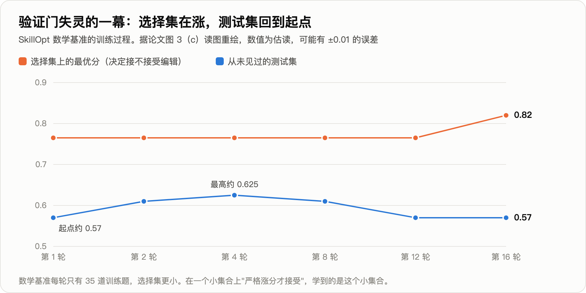

一个 300 亿参数（每次激活 30 亿）的开源模型，在七项企业任务上的平均成功率是 78.0%。
研究者找来一位更强的老师：同样的任务、同样的外部配置，老师的成功率是 93.6%。让学生做监督微调，也就是把老师的成功轨迹当标准答案、训练学生逐字复现。这是业内最标准的做法。
训练完，学生的成功率是 63.1%。七项任务全部退步，最多的一项掉了 29.9 分。
这是 Salesforce 2026 年 9 月 8 日挂出的论文（arXiv 2609.09134）的核心结果。论文给的原因是：学生学到了老师的知识，却丢了自己原来的做事方式；而包在模型外面的那层文字，是围着它原来的做事方式调出来的。开头那个 78.0%，本身就是调这层文字调出来的，调之前只有 29.2%。
这层文字怎么调、调完还能不能接着动权重，两年里有四篇论文在同一条线上：TextGrad、GEPA、SkillOpt 和这一篇。它们回答的是同一个问题：不改模型权重，只改模型外面那层文字，能不能也算"训练"。
一、运行框架：模型外面的那层文字
一个大模型应用的表现由两样东西决定。一是权重。二是包在模型外面的一切：系统提示词、技能文档、工具说明、执行钩子（每步前后自动运行的检查程序）、上下文管理（哪些内容留在模型的输入里）。后者现在有个统一的名字，叫运行框架。Claude Code、Codex 这类产品，就是"模型加一套运行框架"。
改权重，更新的是数十亿个浮点数，信号是数值梯度，要有权重和显卡，产物不可读，风险是过拟合和遗忘。改文字，更新的是一段人能读的文本，信号是大模型读完轨迹后写的批评，能调接口就行，闭源模型也可以，产物可审计、可手改、可搬到别的模型上，风险是越改越长、越改越空、改完不如不改。下文说的"轨迹"，指智能体完成一个任务的完整过程记录：每一轮想了什么、调了哪个工具、工具返回了什么。
这层文字的分量不小。Salesforce 论文里，同一个模型、权重一个字节没动，只是自动调整了运行框架，七项任务平均成功率从 29.2% 到 78.0%，多了 48.8 分。
命令行任务基准 Terminal-Bench 2.0 的官方榜上，同一个 Claude Opus 4.6 换不同的运行框架，成绩相差 18.4 分；Gemini 3.1 Pro 相差 20.8 分（据综述 2606.20683 整理，属于观察性比较）。
二、2024 年 6 月：TextGrad，把批评当梯度
斯坦福的 TextGrad（arXiv 2406.07496，后发表于《自然》）是这条线的起点。
简单说：让执行模型做题，让另一个更强的大模型读它的回答、写批评，再按批评改提示词，循环十几次。
论文的讲法更形式化。把系统里每一步的输入输出连成一张有向图，图上的变量是文本。正着执行一遍之后，反着沿图走：每条边多调用一次大模型，把下游收到的批评翻译成"上游这个变量该怎么改"。论文把这段话叫文本梯度，接口也照搬 PyTorch：loss.backward()，optimizer.step()。

图的下半部分是论文里的真实例子，物品计数任务。执行模型 gpt-3.5，批评由 gpt-4o 写，12 次迭代，总共只看了 36 道训练题。
- 优化前："回答推理题，逐步思考，最后一行按固定格式给出数值。"准确率 77.8%。
- 优化后："逐项列出物品与数量；直接从清单求和；核对每项是否与问题相关；给出答案前再数一遍。"准确率 91.9%。
| 任务 | 基线 | TextGrad |
|---|---|---|
| LeetCode 难题完成率（gpt-4o） | 26%；带 1 个示例的自我反思法 31% | 36% |
| GPQA 钻石集（gpt-4o） | 51.0% | 55.0% |
| 物品计数（gpt-3.5 执行） | 77.8%；DSPy 带 8 个示例 84.9% | 91.9% |
| GSM8k 数学（gpt-3.5 执行） | 72.9%；DSPy 带 8 个示例 81.1% | 81.1% |
优化出来的那段提示词里，没有任何一道具体题目的信息，全是通用的做题纪律。
一年半后，这一点受到了质疑。2025 年 12 月的一篇论文（arXiv 2512.13598）专门检验"梯度"这个类比，三个结果：
- 沿图逐层反传，相对"让大模型一步直接改写"，多数设置下无显著差异；
- 用错误的标签去训练，准确率也不显著下降；
- 训练十轮，没有出现过拟合的形态。
真梯度不会这样。合理的解释是：这类方法提分，靠的是发现通用的格式与纪律，而不是从样本里吸收信息。需要说明，这篇质疑论文用的是 Claude 3.7 Sonnet 和三个百题级数据集，结论能否外推到弱模型和程序性任务，尚无证据。
同台对比也不利于 TextGrad。2025 年 7 月的 GEPA 不做反向传播，GPT-4.1 mini 上六项任务合计提升 12.19%，同一张表里 TextGrad 是 6.11%。下一节讲它。
梯度这个类比被放弃了，留下来的是一个判断：一段文字反馈，比一个分数信息量大。
三、2025 年 7 月：GEPA，用反思和进化代替反向传播
伯克利与斯坦福等的 GEPA（arXiv 2507.19457，ICLR 2026 口头报告）是上面那个同台对比里的赢家。它保留了"文字反馈信息量大"这个判断，丢掉了反向传播，换成三个部件。

- 读完整轨迹写反思。 每次在 3 道题上跑一遍，把每个模块的输入、输出、推理链，连同评分器在给分之前产生的文字（编译报错、没通过的规则、还缺哪些文档）一起交给反思模型，让它改写一个模块的提示词。
- 小批复评。 同样 3 道题再跑一遍，变好才进候选池。
- 在帕累托前沿上选父代。 对每道验证题记下所有候选的最高分，凡是至少在一道题上领先的候选都留着，下一次按"领先几道题"加权随机抽一个来改。目的是不被第一个不错的策略困住。
第三条是它与 TextGrad 最实质的区别。TextGrad 每次从总分最高的候选出发。GEPA 的消融里，这样做四项任务合计 +6.05，束搜索 +5.11，帕累托选择 +12.44。

上图是 GEPA 论文的原图 5，一条真实的进化路径。任务是把用户的私密问题改写后交给外部大模型，既要答得好又不能泄露个人信息。括号里是验证集分数。从一句话的初始指令（82.26）到最优候选（97.6），红色路径走了四步：加上识别个人信息的指导；把输出拆成"推理"与"请求"两段，明令禁止出现姓名与编号；要求对每处删改给出理由；禁止部分遮盖。灰色节点是没走通的分支。
主结果（Qwen3-8B，测试集 %；GRPO 是改权重的强化学习，用 LoRA、固定 24,000 次采样）：

| 方法 | 多跳问答 | 指令遵循 | 隐私委托 | AIME 2025 | 六项平均 |
|---|---|---|---|---|---|
| 不优化 | 42.3 | 36.9 | 80.8 | 27.3 | 45.2 |
| MIPROv2（此前最强的提示词优化器） | 55.3 | 36.2 | 81.6 | 20.0 | 47.8 |
| GRPO（改权重） | 43.3 | 35.9 | 86.7 | 38.0 | 48.9 |
| GEPA | 62.3 | 38.6 | 91.9 | 32.0 | 54.9 |
六项里五项 GEPA 高于 GRPO，AIME 上低 6 分。换到闭源的 GPT-4.1 mini 上，六项平均：不优化 53.0，Trace 56.3，MIPROv2 58.7，TextGrad 59.1，GEPA 65.2。六项全部跑完，GEPA 花了 86 美元。
在 Qwen3-8B 上优化出的提示词直接搬到 GPT-4.1 mini 上，仍有 +9.0，高于直接在 GPT-4.1 mini 上优化的 TextGrad 和 MIPROv2。
数字核对
标题说"提示词进化胜过强化学习"，摘要说"采样少 35 倍"。两处都要看口径。

- 35 倍是单任务峰值。 GEPA 各任务的总预算是 1,839 到 7,051 次采样，GRPO 是 24,000 次，比值 3 到 13。"35 倍"来自指令遵循任务：GEPA 在第 678 次采样处找到最优，24,000 ÷ 678 ≈ 35。
- 对面的强化学习配置偏弱。 用 LoRA、24,000 次采样；论文自己在引言里说同期工作通常要数万次、最多用到数十万次。结论的适用范围是"小预算、小模型、有文字反馈"。
- 合并部件不稳。 加上"合并"后 GPT-4.1 mini 上再 +1.1，Qwen3-8B 上反而 −2.4，指令遵循从 38.6 掉到 28.2，比不优化还低。
"反思比反传有效、多样性比贪心有效"这两条是同预算下比出来的，换模型不变，可以采信。
GEPA 现在是 DSPy、MLflow、谷歌智能体开发套件的内置优化器。也正因为用的人多，它的毛病在一年里被摸清了：越改越长，以及对训练题过拟合。这就是下一篇论文的起点。
四、2026 年 5 月：SkillOpt，把训练纪律搬到技能文档上
GEPA 之后，让大模型反复改一段文字这件事本身，被发现有三种毛病。
- 越改越长。客服公司 Decagon 在生产环境里用 GEPA，提示词被改到 5,000 字符以上，训练集涨、泛化跌；压回约 1,000 字符几乎无损。另一篇论文（ESPO，2609.04197）的说法是"提示词变长 3 倍却不更准"。
- 越改越空。ACE 论文（arXiv 2510.04618）记录过一次：18,282 词元（token）的上下文被一步重写成 122 词元，准确率从 66.7 掉到 57.1。
- 改完不如不改。一项评测（arXiv 2604.14585）做了 72 次提示词优化，49% 的结果低于不优化。
微软与上海交大等的 SkillOpt（arXiv 2605.23904）针对的就是这个。被训练的对象是一份技能文档，也就是 Anthropic 在 2025 年 10 月发布、如今 Codex 与 Claude Code 都在读的那种 SKILL.md。执行任务的模型全程冻结。
数据分三份，后文都用这三个词：训练集产生经验，选择集决定接不接受一次改动，测试集只在最后报一次成绩。
它把深度学习的训练纪律逐条搬了过来：
| 深度学习 | SkillOpt 的对应物 |
|---|---|
| 一个批次 | 带着当前技能跑 40 个训练任务 |
| 反向 | 失败、成功轨迹分开，每 8 条一组交给优化器模型（另一个更强的大模型，只在训练时出现），各提"增、删、改" |
| 学习率 | 每步最多采纳 4 条编辑，逐渐衰减到 2 条 |
| 验证门 | 候选技能在选择集上分数严格更高才接受，打平也拒绝 |
| 负样本 | 被拒的编辑连同造成的掉分记下来，后面的反思都能看到 |
| 动量 | 每轮结束，同一批 20 个任务用新旧技能各跑一遍，总结成一段受保护的长期指引 |
流程如下图：

结果（GPT-5.5，直接对话，测试集准确率 %）：

| 技能来源 | 表格处理 | 办公文档问答 | 数学 | 家居环境 | 六项平均 |
|---|---|---|---|---|---|
| 无技能 | 41.8 | 33.1 | 37.6 | 83.6 | 58.8 |
| 人写技能 | 72.9 | 66.9 | 38.4 | 91.8 | 73.7 |
| TextGrad | 41.1 | 42.0 | 49.2 | 82.8 | 64.0 |
| GEPA | 73.6 | 63.9 | 43.2 | 85.8 | 73.4 |
| SkillOpt | 80.7 | 72.1 | 66.9 | 95.5 | 82.3 |
（表内列了其中四项，另两项搜索问答、文档图像问答见图；平均值含全部六项。）
六个基准、七个模型、三种运行框架，共 52 组对比，SkillOpt 全部最优或并列。
学到的东西长什么样？ 表格处理任务，初始技能只有一句"用 Python 表格库，保留无关内容"。被采纳的编辑依次加上了：
- 打开真实工作簿，不要只看预览；
- 跨表定位表头与目标区域；
- 查找之前先规范化键与单元格类型；
- 题目里提到查找类公式时，仍然写入算好的静态数值（评分程序读的是单元格的值，不会替你重算公式）；
- 填满整个目标区域，包括现在是空白的格子；
- 保存后重新打开，核对边界行。
这一次运行，测试集从 40.4 到 78.9（与主表不是同一次运行）。
最终写进技能的编辑极少：六个基准上只有 1 到 4 次。数学基准 +29.3 分来自 1 次被采纳的编辑，办公文档 +39.0 分也是 1 次。优化器提出的编辑绝大多数被验证门挡在了外面。
代价不小：单个任务的训练消耗约 2,100 万到 2.14 亿词元。
数字核对
SkillOpt 相对"无技能"的两位数增益远大于噪声，可信；要打折的是"比 GEPA 高出多少"，以及验证门到底有多可靠。
对实践最有用的一条：论文自己的训练曲线显示，验证门在小数据上会失灵。

数学基准上，选择集的最优分从 0.765 升到 0.82；测试集先升到约 0.625，随后回落到约 0.57，回到了起点（据 SkillOpt 论文图 3 估读）。
原因是数学基准每轮只有 35 道训练题，选择集更小。在一个小集合上"严格涨分才接受"，学到的是这个小集合本身。
另外两条是数字口径。 论文声明使用默认配置，默认配置在消融表（逐个更换部件、看成绩变化的对照表）里的成绩是 87.1／77.5／61.3（搜索问答／表格／数学）。主表对应的是 87.3／80.7／66.9，恰好等于消融表里另外两种配置各自的最好成绩。消融表报的是测试集成绩，也就是说，主表这三个数相当于在测试集上挑过配置，比默认配置分别高 0.2、3.2、5.6 分。
全文没有重复实验。同一个配置，论文两处报告的数学成绩是 56.5 和 61.3，差 4.8 分。
五、2026 年 9 月：框架调好之后再微调权重
开头那个实验的设定如下。学生是 Qwen3-Coder-30B-A3B，老师是 Gemini-3.1-Pro，七项任务是考勤薪资审计、预算审批、库存预警、物联网异常检测、浏览器自动化、网站后台管理、代码重构。
第一步，用 GEPA 式的搜索给学生进化运行框架，每个任务每次搜索的预算是 20 美元。改动都很具体：薪资审计写明了汇总与加班规则；库存预警加了一个"枚举全部商品"的工具；网站管理补了一个结构化的"完成"工具，并写明后台要"先筛选再读总数"。学生从 29.2 到 78.0。
第二步，把这个为学生进化的框架拿给老师用，老师也从 84.4 涨到 93.6。学生和老师之间还差 15.6 分，于是自然想到：让学生模仿老师在这个框架下的成功轨迹。

结果是橙色那一条。对照组说明问题不在模仿本身：同样的模仿，放在没进化过的原始框架下是 +6.3 分；放在进化后的框架下是 −14.9 分。
换一个学生（Gemma-4-26B）在网站后台管理一项任务上复现：46.7 → 进化框架后 55.6 → 模仿后 41.1，比什么都不做还低。

失败归因：规划类失败从 1.1% 升到 14.6%
论文给每条失败轨迹归了类：
| 进化框架 | 进化框架＋整条模仿 | |
|---|---|---|
| 平均成功率 | 78.0 | 63.1 |
| 框架里"领域计算规则"这条修改被用到的轨迹比例 | 30.8% | 76.1% |
| 失败中"规划缺陷"的占比 | 1.1% | 14.6% |
模仿之后，学生确实学到了老师的知识，框架用得也更多了。坏掉的是规划。这里的节奏就是指规划方式：每一步做多少事，什么时候核对，什么时候提交。
先看薪资审计的案例。进化后的框架给了计算规则，和一句"输出前核对一次列名再保存"。原模型 14 到 20 步完成，三次全对。
模仿之后的模型算出了正确的部门汇总，却把"核对一次"变成了停不下来的循环：同一个查看命令发了 29 次，题目重读了约 20 次，78 步没有发出完成指令，得 0 分。
另一个案例是停得太早。问后台"已通过的评论共多少条"，正确答案 346。框架里写了先筛选再计数。模仿后的 Gemma 学到了老师简短、早下结论的风格，进了评论列表没有筛选，直接读了未筛选的总数 351 交卷。
一个停不下来，一个停得太早，共同点是换了节奏。框架是围着学生原来一步一步的节奏进化出来的；整条模仿让它换上了老师的节奏，它撑不起，框架也不再合身。
论文的修法：在策略单轮纠正
论文把它叫在策略单轮纠正。"在策略"的意思是：训练数据来自学生自己走到的状态，而不是老师走到的状态。

- 取学生自己在进化框架下的失败轨迹；
- 由一个大模型自动定位出错的那一轮；
- 让老师只改写这一轮：一句纠正思路，加一次正确的工具调用，前后各轮原样保留；
- 每处采 3 个候选留最好的；
- 约 400 条纠正样本加约 50 条自己的成功样本，做 LoRA 微调（只训练一小组附加参数的低成本微调），不到 1 小时。
结果：78.0 → 79.7。五项上升，两项微降（−0.4、−0.6，在噪声内），规划类失败占比停在 1.8%。
数字核对
标题写的是弱模型"追上"，数字不支持这个说法。
- +1.7 分约为 1.4 个标准误（两行的标准误分别是 0.97 和 0.67）。严格的说法是"单轮纠正不破坏模型与框架的匹配"，增益本身还没证实。离老师的 93.6 仍差 13.9 分。
- "知识学到了"用的是占比。模仿后失败总数变多，知识类失败的绝对量多半也在涨，论文只给了占比没给绝对量。规划类失败的增加也解释不完 14.9 分，其余分散在知识类和其他类别里，论文没有解释。
- 缺一个关键对照：只用学生自己的成功轨迹微调会怎样？训练集里混了 50 条这样的样本，+1.7 分来自哪一部分无从区分。
- 标题里的"协同进化循环"只跑了一轮，没有把更新后的模型放回去再进化框架。
但"模仿导致退步"这一半很硬：七项任务方向一致，幅度是标准误的十几倍，两个模型家族复现（Gemma 只做了一项任务），还有原始框架下的反向对照。

上图蓝点是本文讲的四篇，灰点是同期的相关工作。前三条线改文字，第四条线改权重，2026 年下半年汇到同一个问题上：文字和权重怎么一起调。
把四篇放在一起看，提分的改动都很小。TextGrad 的物品计数只抽了 36 个样本，提示词多了四句做题纪律。SkillOpt 六个基准最终只写进 1 到 4 条编辑，数学一项的 29.3 分来自其中 1 条。Salesforce 的异常检测从 0.6 到 89.4，靠一次把流程写清楚的改写。
出问题的改动都很大。GEPA 加上合并部件，指令遵循掉到比不优化还低。SkillOpt 在 35 道题的数学集上，选择集在涨，测试集回落到起点。整条模仿换掉了学生的全部节奏，框架不再合身，掉了 14.9 分；只改出错的那一轮，至少没有退步。
这里的小不是幅度小，是数量少：每次只接受少数几条改动，每一条都在没见过的题上过一遍。两年里站得住的工作，做对的就是这一件事。
完整技术报告（约 90 篇相关工作、逐篇编号与数字口径）： https://github.com/xbtlin/ai-berkshire/blob/main/reports/AI产业研究/文本空间优化-从TextGrad到技能与运行框架协同进化-技术报告-20260922.md
论文原文： - TextGrad：arXiv 2406.07496 - GEPA：arXiv 2507.19457 - SkillOpt：arXiv 2605.23904 - Co-Evolving Harnesses and Models：arXiv 2609.09134